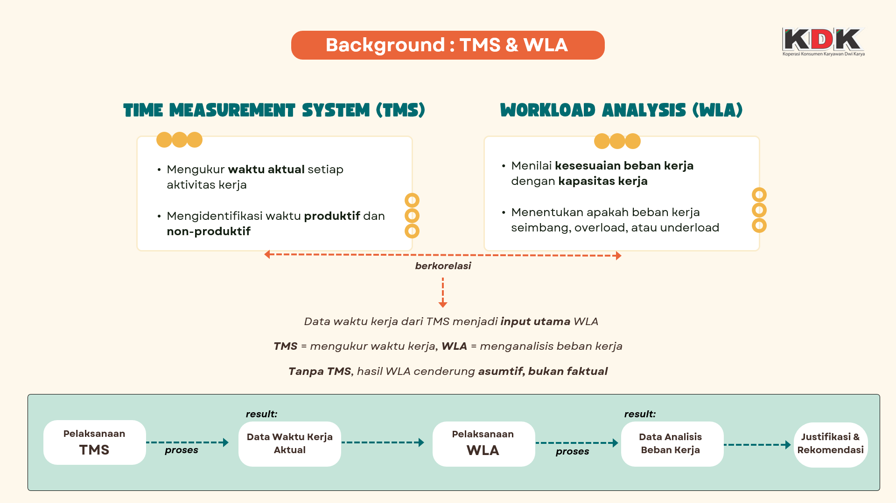
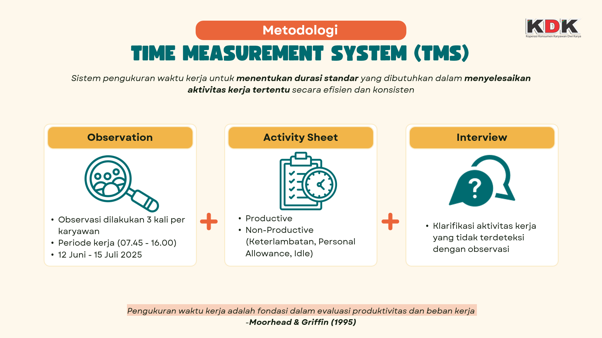
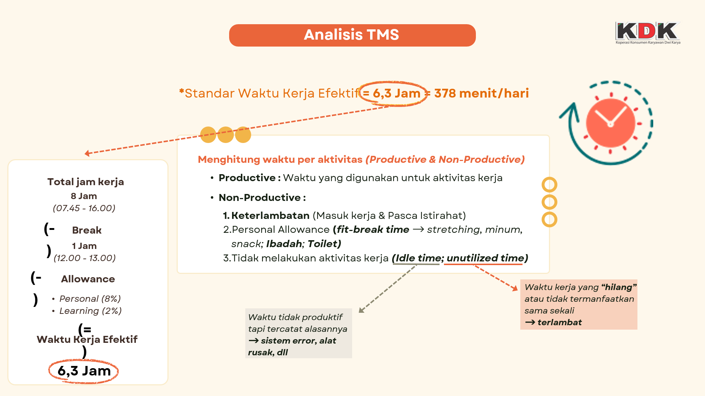
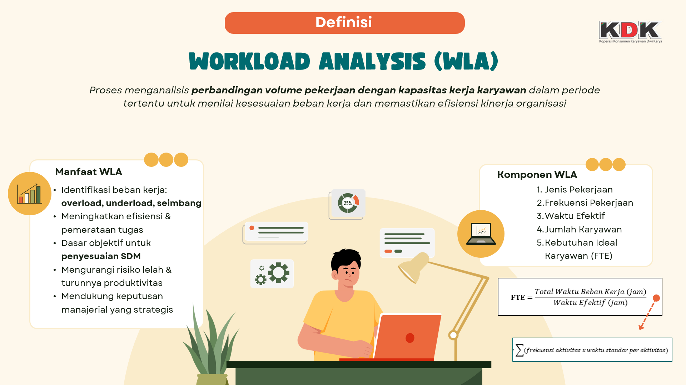
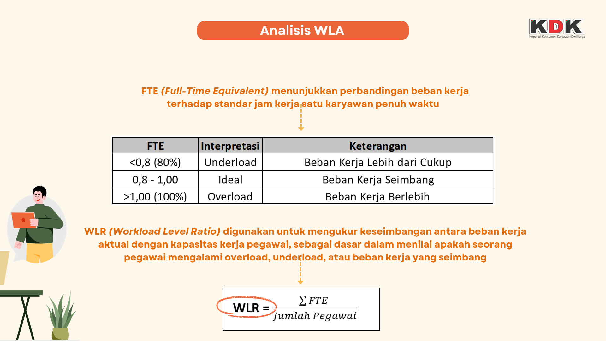

Workload Analyst
I conducted a Workload Analyst project using the Task Management System (TMS) and Workload Analyst (WLA) approaches as the primary methods. The objective of this project was to evaluate workload balance, time efficiency, and the effectiveness of task distribution among employees, enabling the organization to enhance productivity and operational quality.
The first project was carried out at PT Great Giant Food (GGF) over a period of approximately four months. The analysis covered various sub-departments within GGF, with a strong focus on employees holding Admin positions. During this stage, I conducted direct observations, collected daily work activity data, and mapped working time to understand actual workload patterns across units. This approach helped identify workload imbalances, task duplication, and areas requiring process optimization.
Subsequently, I conducted a second Workload Analyst (WLA) project at K3DK within the Accounting Sub-Department of KDK for approximately two months. In this unit, I performed an in-depth analysis of accounting processes, ranging from data entry and verification to financial reporting. The collected data was categorized using TMS to map task frequencies, duration, and the complexity level of each activity.
Using the Workload Analyst method, all findings were analyzed by comparing the actual workload with the ideal capacity of each employee. Based on the results, I formulated workflow improvement recommendations, including task prioritization adjustments, more balanced time allocation, administrative process optimization, and strategies to enhance efficiency in accounting and administrative operations.
Overall, this project provides valuable insights and practical strategies to help departments within GGF and the KDK Accounting Unit build a more balanced, productive, and data-driven work environment. The analysis also supports management decision-making related to workforce planning, process restructuring, and continuous organizational performance improvement.






🧩Key Feature of TMS & Workload Analyst
- 📝 Task Tracking – Monitoring work progress and task timelines.
- ⚖️ Workload Analysis – Evaluating workload distribution for efficiency and balance.
- 🔔 Notifications & Reminders – Identifying task priorities and critical points.
- 🤝 Collaboration Insights – Understanding teamwork and communication flow.
- 📈 Reports & Insights – Providing data-driven recommendations for improvement.
Comments (0)